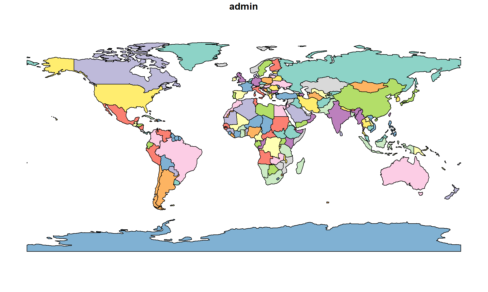
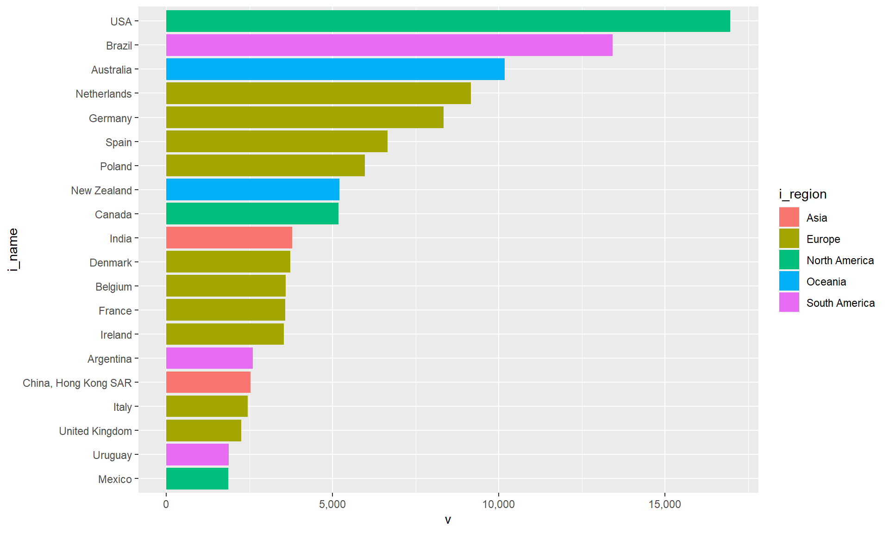
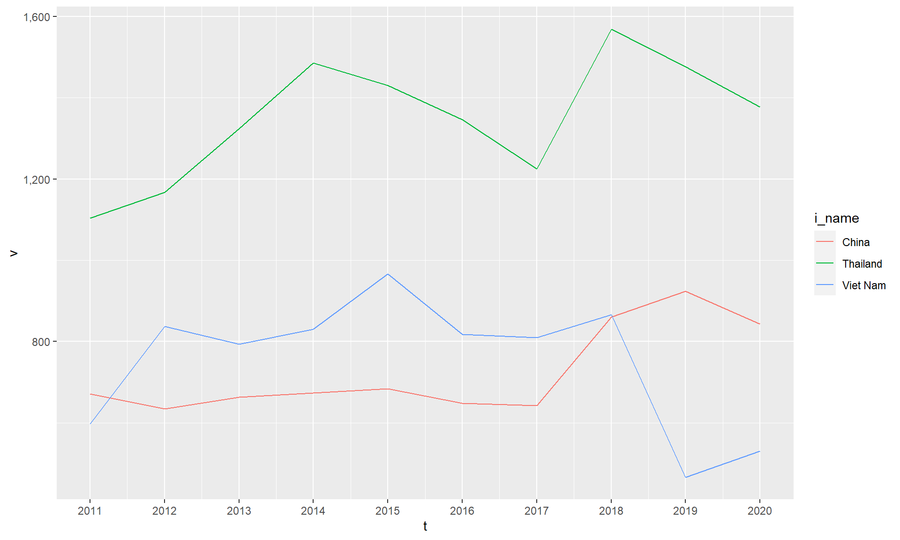
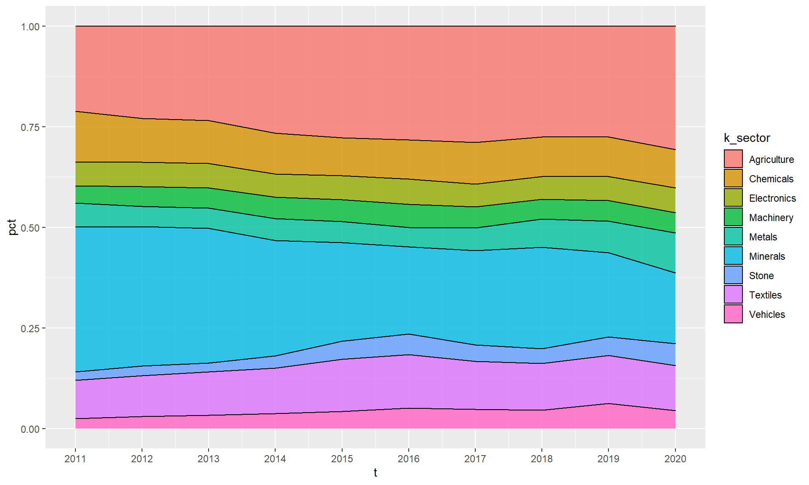
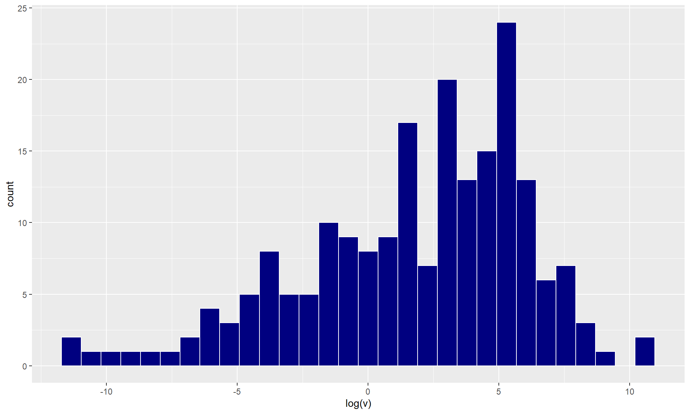
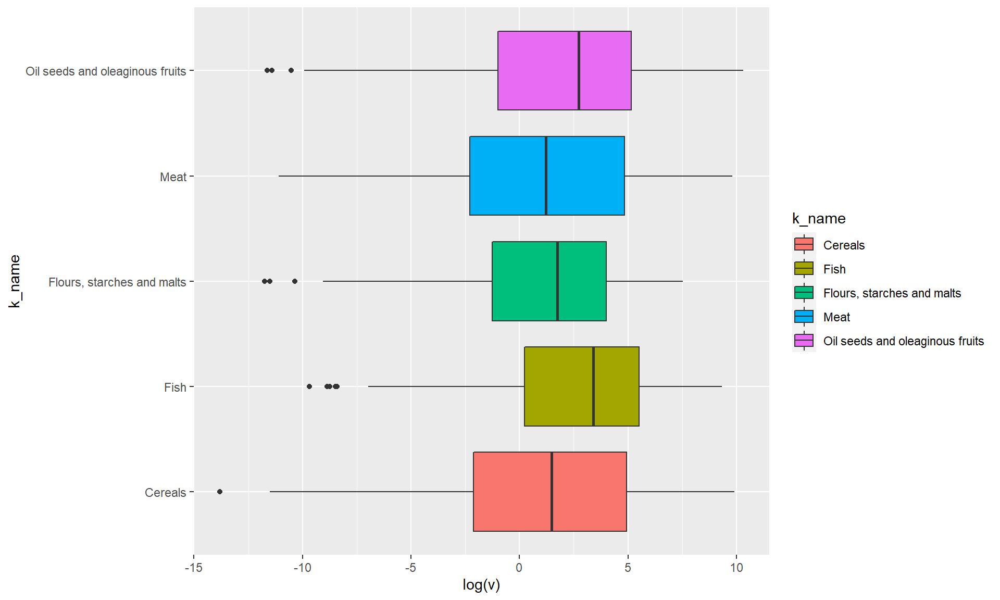
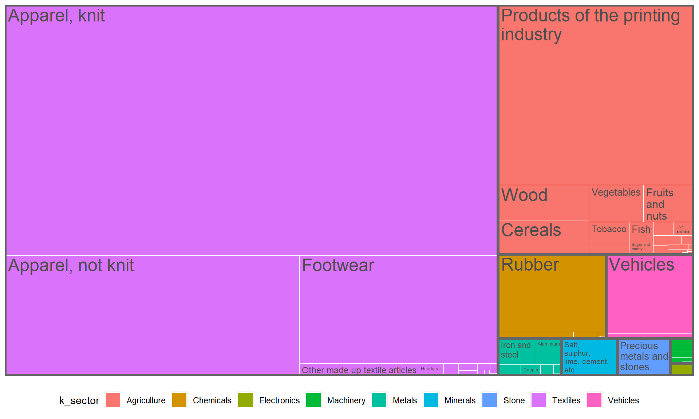
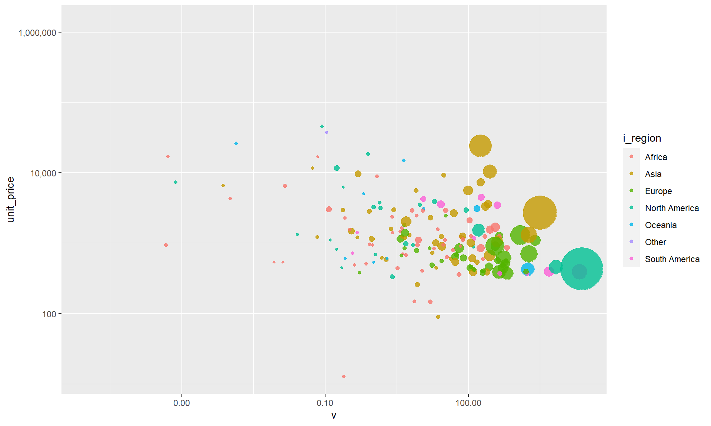
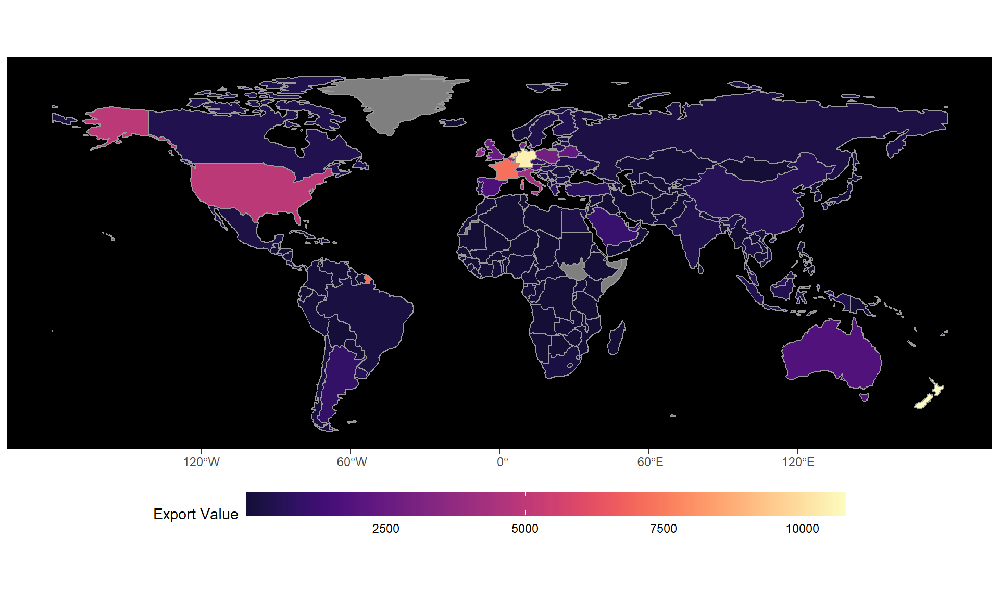

library(tidyverse)
library(scales)
library(treemapify)
library(rnaturalearth)
library(sf)
library(viridis)Excercise 3: Data Visualization
Load packages
Import data
- Import
baci_extra_iwhich is export by product (HS 2 digit) of exporting countries from 2011-2020. You have two options to load data.
Option 1: Import from internet.
url_baci_i <- "https://github.com/piyayut-ch/Workshop_URTA_2022/raw/main/data/baci_extra_i.rds"
baci_extra_i <- readRDS(gzcon(url(url_baci_i)))
# gzcon and url function are used to download data from githubOption 2: Import from your machine, if you open with the R project and have the file in folder data.
path_baci <- here::here("data/baci_extra_i.rds")
baci_extra_i <- readRDS(path_baci)baci_extra_i# A tibble: 193,930 × 13
t i i_iso3c i_name i_region k k_name k_sec…¹ v q
<dbl> <dbl> <chr> <chr> <chr> <chr> <chr> <chr> <dbl> <dbl>
1 2011 4 AFG Afghanistan Asia 01 Live … Agricu… 1.00e-1 5.5 e-2
2 2011 4 AFG Afghanistan Asia 02 Meat Agricu… 1.49e-1 6.74e+1
3 2011 4 AFG Afghanistan Asia 03 Fish Agricu… 1.11e-3 8.5 e-2
4 2011 4 AFG Afghanistan Asia 04 Diary… Agricu… 5.02e-1 2.85e+2
5 2011 4 AFG Afghanistan Asia 05 Anima… Agricu… 4.36e-1 2.01e+2
6 2011 4 AFG Afghanistan Asia 06 Plants Agricu… 1.1 e-5 1 e-3
7 2011 4 AFG Afghanistan Asia 07 Veget… Agricu… 2.67e+1 1.25e+5
8 2011 4 AFG Afghanistan Asia 08 Fruit… Agricu… 1.66e+2 1.13e+5
9 2011 4 AFG Afghanistan Asia 09 Coffe… Agricu… 7.87e+0 4.90e+3
10 2011 4 AFG Afghanistan Asia 10 Cerea… Agricu… 5.05e-2 1.58e+2
# … with 193,920 more rows, 3 more variables: pop <dbl>, gdp <dbl>,
# gdpcap <dbl>, and abbreviated variable name ¹k_sector- Import
worldmap usingrnaturalearthpackage.
world <- ne_countries(scale = "small", returnclass = "sf")
plot(world['admin'])
Question 1: Bar plot
Make top 20 exporters of Meat in 2018. Fill ... in the code snippet.
data_bar <- baci_extra_i |>
filter(t == ... & k == ...) |>
mutate(i_name = fct_reorder(i_name, v)) |>
arrange(desc(v)) |>
head(20)
ggplot(data_bar, aes(x = ..., y = ..., fill = ...)) +
geom_col() +
scale_x_continuous(labels = comma)data_bar <- baci_extra_i |>
filter(t == 2018 & k == "02") |>
mutate(i_name = fct_reorder(i_name, v)) |> #reorder country name using factor
arrange(desc(v)) |>
head(20)
ggplot(data_bar, aes(x = v, y = i_name, fill = i_region)) +
geom_col() +
scale_x_continuous(labels = comma)
Question 2: Line plot
Make a line plot of Flours, starches and malts export of Thailand, Viet Nam and China from 2011 - 2020. Fill ... in the code snippet.
data_line <- baci_extra_i |>
filter(i_iso3c %in% c(...) & k == ...)
ggplot(data_line, aes(x = ..., y = ..., color = ...)) +
geom_line() +
scale_x_continuous(breaks = 2011:2020) +
scale_y_continuous(labels = comma)data_line <- baci_extra_i |>
filter(i_iso3c %in% c("THA", "VNM", "CHN") & k == "11")
ggplot(data_line, aes(x = t, y = v, color = i_name)) +
geom_line() +
scale_x_continuous(breaks = 2011:2020) +
scale_y_continuous(labels = comma)
Question 3: Area plot
Make an area plot that shows export structure of India from 2011-2020 using share. Fill ... in the code snippet.
data_area <- baci_extra_i |>
filter(i_iso3c == ...) |>
group_by(...) |>
summarize(v = sum(v, na.rm = TRUE)) |>
ungroup() |>
group_by(t) |>
mutate(pct = ...)
ggplot(data_area, aes(x = ..., y = ..., fill = ...)) +
geom_area(alpha = 0.8, size = 0.5, color = "black") +
scale_x_continuous(breaks = 2011:2020) +
scale_y_continuous(labels = comma)data_area <- baci_extra_i |>
filter(i_iso3c == "IDN") |>
group_by(t, k_sector) |>
summarize(v = sum(v, na.rm = TRUE)) |>
ungroup() |>
group_by(t) |>
mutate(pct = v / sum(v))
ggplot(data_area, aes(x = t, y = pct, fill = k_sector)) +
geom_area(alpha = 0.8, size = 0.5, color = "black") +
scale_x_continuous(breaks = 2011:2020) +
scale_y_continuous(labels = comma)
Question 4: Histogram
Make a histogram of distribution of export of trade value of Oil seeds and oleaginous fruits in 2020 in log. Fill ... in the code snippet.
data_hist <- baci_extra |>
filter(t == ..., k == ...)
ggplot(data_hist, aes(x = ...)) +
geom_histogram(
bins = 30,
fill = "navyblue",
color = "white"
)data_hist <- baci_extra_i |>
filter(t == 2020, k == "12")
ggplot(data_hist, aes(x = log(v))) +
geom_histogram(
bins = 30,
fill = "navyblue",
color = "white"
)
Question 5: Box plot
Make a box plot of distribution of log of trade value in 2020 of
MeatFishCerealsFlours, starches and maltsOil seeds and oleaginous fruits
Fill ... in the code snippet.
data_boxplot <- baci_extra_i |>
filter(k %in% c(...), t == ...)
ggplot(data_boxplot, aes(x = ..., y = log(...), fill = ...)) +
geom_boxplot() +
coord_flip()data_boxplot <- baci_extra_i |>
filter(k %in% c("02", "03", "10", "11", "12"), t == 2020)
ggplot(data_boxplot, aes(x = k_name, y = log(v), fill = k_name)) +
geom_boxplot() +
coord_flip()
Question 6: Treemap
Make a treemap plot of Cambodia in 2011. Fill ... in the code snippet.
data_treemap <- baci_extra_i |>
filter(t == ..., i_iso3c == ...)
ggplot(
data_treemap,
aes(area = ...,
fill = ...,
subgroup = ...,
label = ...)
) +
geom_treemap(color = "white", start = "topleft") +
geom_treemap_subgroup_border(color = "grey40", start = "topleft") +
geom_treemap_text(
color = "grey30",
place = "topleft",
start = "topleft",
reflow = TRUE) +
theme(legend.position = "bottom") +
guides(fill = guide_legend(nrow = 1))data_treemap <- baci_extra_i |>
filter(t == 2011, i_iso3c == "KHM")
ggplot(
data_treemap,
aes(area = v,
fill = k_sector,
subgroup = k_sector,
label = k_name)
) +
geom_treemap(color = "white", start = "topleft") +
geom_treemap_subgroup_border(color = "grey40", start = "topleft") +
geom_treemap_text(
color = "grey30",
place = "topleft",
start = "topleft",
reflow = TRUE) +
theme(legend.position = "bottom") +
guides(fill = guide_legend(nrow = 1))
Question 7: Scatter plot
Make a scatter plot of unit price (x) and export value (y) of Oil seeds and oleaginous fruits in 2015. Fill ... in the code snippet.
data_scatter <- baci_extra_i |>
filter(t == ..., k == ...) |>
mutate(
unit_price = v * 1e6 / q,
gdp = gdp / 1e6
)
ggplot(
data_scatter,
aes(x = ...,
y = ...,
size = ...,
color = ...)
) +
geom_point(alpha = 0.8) +
scale_x_log10(labels = comma) +
scale_y_log10(labels = comma) +
scale_size(range = c(1, 20), guide = NULL)data_scatter <- baci_extra_i |>
filter(t == 2015, k == "12") |>
mutate(
unit_price = v * 1e6 / q,
gdp = gdp / 1e6
)
ggplot(
data_scatter,
aes(x = v,
y = unit_price,
size = gdp,
color = i_region)
) +
geom_point(alpha = 0.8) +
scale_x_log10(labels = comma) +
scale_y_log10(labels = comma) +
scale_size(range = c(1, 20), guide = NULL)Warning: Removed 27 rows containing missing values (geom_point).
Question 8: Map
Make a cholorpleth map (heatmap) of Diary products in year 2019. Fill ... in the code snippet.
mytheme <- theme(
panel.background = element_rect(fill = 'black'),
panel.grid.major = element_line(color = 'black')
)
data_map <- baci_extra_i |> filter(t == ..., k == ...)
world_baci <- world |>
filter(continent != "Antarctica") |>
left_join(
data_map,
by = c("adm0_a3" = "i_iso3c")
)
ggplot(world_baci, aes(fill = ...)) +
geom_sf(color = "grey60") +
scale_fill_viridis(option = "magma", begin = 0.1, end = 1) +
theme(legend.position = "bottom") +
guides(
fill = guide_colorbar(
title = "Export Value",
barwidth = 30,
direction = "horizontal"
)
) +
mythememytheme <- theme(
panel.background = element_rect(fill = 'black'),
panel.grid.major = element_line(color = 'black')
)
data_map <- baci_extra_i |> filter(t == 2019, k == "04")
world_baci <- world |>
filter(continent != "Antarctica") |>
left_join(
data_map,
by = c("adm0_a3" = "i_iso3c")
)
ggplot(world_baci, aes(fill = v)) +
geom_sf(color = "grey60") +
scale_fill_viridis(option = "magma", begin = 0.1, end = 1) +
theme(legend.position = "bottom") +
guides(
fill = guide_colorbar(
title = "Export Value",
barwidth = 30,
direction = "horizontal"
)
) +
mytheme